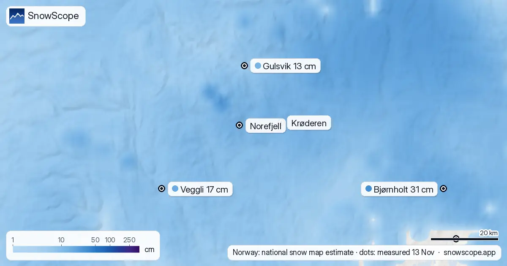

Snödjup på Norefjell: ett stort lyft över natten, 45 cm högt upp (14 november 2026)
Norefjell, det stora fjället närmast Oslo, vaknade upp vitt. På Norges nationella snökarta gick snödjupet i sluttningen från ungefär 4 till 5 cm till 15 till 20 cm på en natt, överallt mellan 133 m vid Krøderen och 978 m i de övre backarna. På platån ovanför, på 1 288 m, uppskattar kartan ungefär 45 cm. Det här är uppskattningar från den nationella kartan. Väderstationen i Gulsvik, 18 km bort på 142 m nere i dalen, mätte 13 cm samma morgon, så till och med dalbotten är vit.
Se snöprognosen för Norefjell live i SnowScope-appenSnödjup, pudervarningar och 3D-kartan, gratis.
En natt ändrade bilden
Vår egen uppskattning för de senaste sju dagarna är ungefär 14 cm nysnö på toppen och halvvägs upp, och 8 cm i dalen. Det mesta kom det senaste dygnet, vilket stämmer med hoppet på den nationella kartan.
Det här är färsk, lätt snö på mark som var bar för några dagar sedan. Det ser fantastiskt ut, men det är inget underlag än: i de opreparerade backarna finns stenar och ljung strax under.

Blir den liggande?
För de kommande sju dagarna har vi ungefär 9 cm på toppen (995 m), 8 cm på 594 m och nästan inget längst ner. Andra prognoser ligger mellan 13 och 53 cm på toppen, så den övre änden är mycket blötare än vår siffra.
Längst ner är problemet värmen: i prognoserna vi jämför med kommer ungefär två tredjedelar av nederbörden som regn på 194 m, och snögränsen ligger runt 300 till 330 m. De lägsta backarna kan tappa mycket av dagens snö; från halvvägs upp och uppåt borde den hålla.
Så ser det normala ut
Våra 46 tidigare vintrar ger ett normalt snödjup den 14 november på 26 cm på toppen, 16 cm halvvägs upp och 3 cm i dalen. Den övre delen av fjället ligger alltså ungefär på det normala i dag, och nertill ligger det över. Den 30 november har toppen normalt 56 cm, den 15 december 64 cm.
Norefjells dal ligger lågt och toppen högt, och det syns i historiken: dalen har ungefär 172 dagar med snö en normal vinter, toppen ungefär 212. Det är toppen som håller kvar vintern längst.
Har Norefjell öppnat?
Inte än. Den 13 november stod det fortfarande på Norefjells egen sida med öppettider att skidcentret är stängt för säsongen, och något öppningsdatum för den här vintern angavs inte. Backsidan visar vilka liftar som går när det ändras.
Tips för skidåkare
- Nysnö på bar mark döljer stenar. Håll dig till preparerade backar tills underlaget har byggts upp.
- Regn på nysnön längst ner gör vägen upp till skidområdet slaskig och sedan isig på natten.
- Platån ovanför liftarna är öppet fjäll: vind, låga moln och tidigt mörker i november. Var förberedd eller håll dig lägre.
Fler kartor (externa webbplatser)
Referenser och källor
- seNorge, Norges nationella snökarta (NVE och MET Norway), öppna data under NLOD-licensen www.senorge.no/
- Norefjell, officiell sida: öppettider och liftstatus, läst 2026-11-13 www.norefjell.com/apningstider
- Varsom, lavinvarningar för Norge www.varsom.no/
- MET Norway, stationsobservationer (CC BY 4.0), dagliga rapporter som de publiceras av Ogimet www.ogimet.com/
Om siffrorna
Uppmätt snö: morgonavläsningar den 13 november 2026 vid de officiella väderstationerna i Sverige (SMHI öppna data), Finland (FMI öppna data, CC BY 4.0) och Norge (MET Norways stationsrapporter, CC BY 4.0, publicerade av Ogimet). Norges nationella snökarta seNorge (NVE och MET Norway, NLOD) ger uppskattningarna på ett rutnät om 1 km för backarna. Våra siffror: SnowScopes prognos för de kommande sju dagarna på tre höjder i skidområdet, jämförd med oberoende prognoser (ECMWF, ICON, GFS, GEM) för 14 till 20 november; snöhistorik för 46 tidigare vintrar (1980-81 till 2025-26), en modell av det förflutna korrigerad för höjd. Öppningsdatum: anläggningarnas egna sidor, lästa den 13 november 2026. Pistlängd och antal liftar: kartläggning i OpenSkiMap.
Officiella lavinprognoser: Varsom (NVE)
Citera den här rapporten
För forskning, undervisning eller press: siffrorna och diagrammen får återanvändas fritt under CC BY 4.0 med den här källhänvisningen.
SnowScope (2026), Snödjup på Norefjell: ett stort lyft över natten, 45 cm högt upp (14 november 2026), https://snowscope.app/blog/sv/2026/11/norefjell-snow-depth-14-november-2026.html, hämtad 2026-11-14
SnowScope (Atlas Labs). (2026, November 14). Snödjup på Norefjell: ett stort lyft över natten, 45 cm högt upp (14 november 2026). SnowScope snow reports. https://snowscope.app/blog/sv/2026/11/norefjell-snow-depth-14-november-2026.html
BibTeX
@misc{snowscope2026norefjellsnowdepth14nove,
author = {{SnowScope (Atlas Labs)}},
title = {Snödjup på Norefjell: ett stort lyft över natten, 45 cm högt upp (14 november 2026)},
year = {2026},
month = nov,
howpublished = {\url{https://snowscope.app/blog/sv/2026/11/norefjell-snow-depth-14-november-2026.html}},
note = {Published 2026-11-14 20:11 UTC; accessed 2026-11-14}
}· CC BY 4.0 · Metoder, data och verktyg →
Norefjell: snö och temperatur efter höjd, i vinter jämfört med förra (verktyg) →
Följ Norefjell
Gratis: ett meddelande när nysnö är på väg, och prognosen varje morgon.
Fler snörapporter

Umeå mätte 20 cm snö den 13 november 2026, från barmark i onsdags. Så ser det ut vid stationerna runt staden, varför det är tidigt och om snön klarar måndagens regn.

Trondheim den 13 november 2026: inget snödjup rapporterat i staden, barmark i Ørland, 5 cm i Meråker, 18 cm i Tågdalen, 11 cm i Røros. Vad som är normalt i mitten av november, och en mild, blöt helg.

Uppmätt snö i Tromsø den 13 november 2026: 6 cm vid stadens station på ön, 44 cm på 710 m i Lyngen, 3 cm i Bardufoss. Nära det normala för datumet, och en mycket kall helg framför sig.